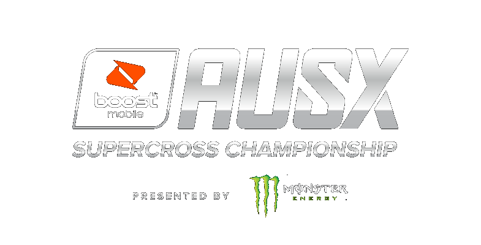
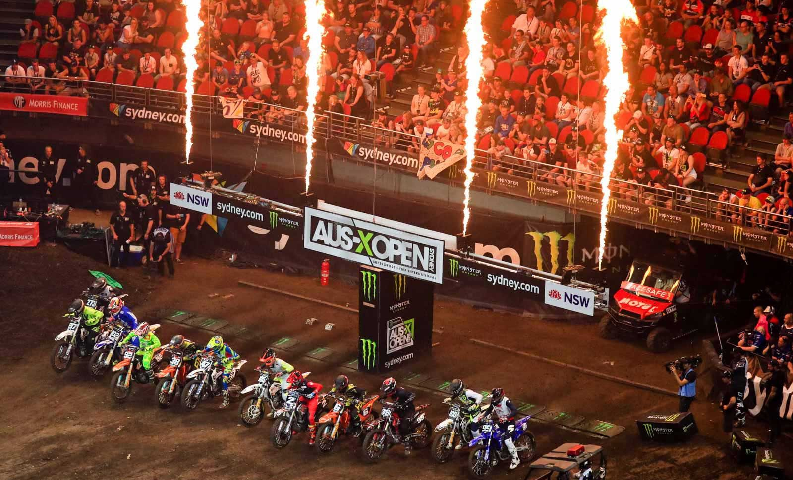

Case Study · Fan Companion · Live SportsWhen Fans Ask, The Championship
Answers. And Sells.
Inside the fan companion DSE Group built for Australia's premier supercross championship: every fan question answered in the series' voice, ticket paths one tap away, and five months of conversations turned into fan-demand intelligence for the promoter.

The Boost Mobile AUSX Supercross Championship.
The Boost Mobile AUSX Supercross Championship is Australia's premier supercross series and one of the biggest supercross properties in the world, filling stadiums with tens of thousands of fans for events like the AUS-X Open. For many fans, the journey to a seat starts with a question: tickets, venue access, which riders are racing, what happens at Fan Fest. Answer those questions well and you sell tickets; lose them and the intent evaporates into a search engine.
Live sports and stadium entertainment: professional supercross.
The AUSX Fan Companion: a grounded AI fan agent, connected ticket paths with click and checkout telemetry, and a fan-demand analytics dashboard, built and operated by DSE Group.
Five months of production history, March through August 2026, reported from aggregated, read-only system data.
A championship's fan demand arrives in waves: announcement days, ticket releases, race weeks. Fans want event information and a path to tickets in the same moment, and a website alone cannot tell the promoter what fans were actually trying to do. Every unanswered question about venues, riders, or ticketing is intent lost to a search engine. And traditional website analytics can show what fans clicked, but not always what they were trying to understand or accomplish. The championship needed both sides solved at once: instant answers for fans, and visibility into fan demand for the business.
DSE Group built the AUSX Fan Companion as a connected, three-part system. A grounded fan agent answers questions in the championship's voice, from venue access and rider lineups to event schedules and Fan Fest, at any hour and at stadium scale. Connected ticket paths let the agent surface the right ticket link inside the conversation, with direct click and checkout telemetry so engagement is measured, not assumed. And a fan-demand dashboard classifies every question by topic, relevance, and resolution, tracking rider mentions and group-booking intent, so the promoter can see what fans want and where the knowledge base needs work.
Ticketing was the single largest named interest in the dataset, representing one in five fan questions. Only 1.5% of classified ticket questions carried an unresolved flag, meaning the system addressed nearly all measurable ticket demand while that demand was occurring. No other topic combined this volume with this resolution rate. The executive read: when a championship makes asking effortless, buying intent identifies itself and gets answered in the same moment.
Roughly one in three ticket conversations produced a direct click on a served ticket link, and 52% of those clicks reached the ticket checkout page, both measured by direct redirect and browser telemetry rather than inference. The operational meaning: the fan companion is not a deflection tool sitting beside the sales funnel; it is a measurable entry point into it, live during the exact moments fans decide.
Over 99% of questions were classified for relevance, and five named themes, tickets, venue, riders, event information, and Fan Fest, generated nearly six in ten of all fan questions. The keyword layer adds a commercial dimension: the system captured 463 rider mentions across 210 fan questions, enough signal to shape content and campaign planning around the riders fans actually ask about, plus 106 group-booking intent signals the promoter can route directly to group sales. Intelligence that previously evaporated with every closed chat now accumulates.
About a third of questions fell into an uncategorized bucket that also contains most unresolved flags, exposing clear gaps in the current classification and knowledge structure. The dashboard makes those gaps explicit rather than hiding them. That is the point of measuring: the same system that proves what works shows the promoter exactly which knowledge categories to strengthen next, from rider information to venue detail. A fan experience improves fastest when its gaps are visible.
The AUSX Fan Companion is a major step forward for the AUSX Championship, helping us connect with fans in real time, modernize the fan experience, and unlock new opportunities for our partners.Adam Bailey, Director, AUSX
What these numbers are, and are not.
Every percentage above comes from aggregated, read-only analysis of the production database, with no personal message content involved. Questions measure conversations, not unique fans. Ticket-link clicks and checkout reaches are direct telemetry that a fan engaged the ticket path; they are not confirmed purchases, and we make no revenue claims until server-verified booking attribution is in place. Resolution flags are directional operational indicators. We publish what the data supports; when it does not support a claim, we say so. That standard applies to every case study we release.
One deployment inside a measured portfolio.
The AUSX Fan Companion is one deployment inside DSE Group's measured portfolio, where AI sales agents resolve 94% of customer conversations entirely on their own across our current deployments. For sports properties, venues, and stadium operators, the same architecture applies: a fan agent in your brand's voice, connected ticket paths with real telemetry, and a dashboard that turns fan questions into commercial intelligence. Explore AI sales agents and fan companions for your audience.
Your Fans Are Already Asking.
Tell us about your series, venue, or club, and the questions your fans ask before every event. We will show you what a fan companion changes.
Start The Conversation